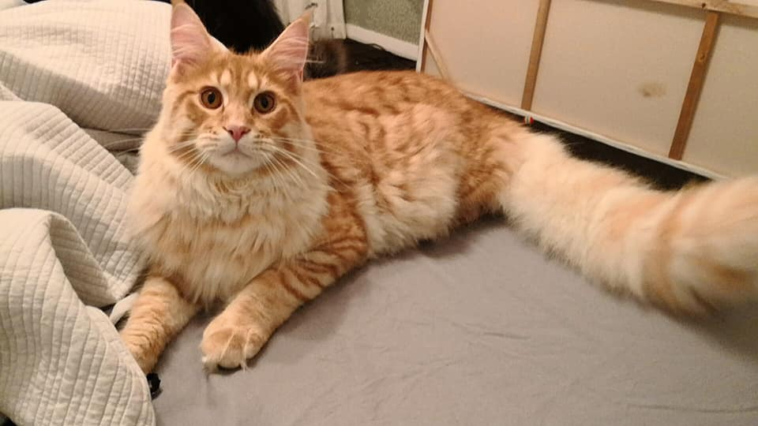
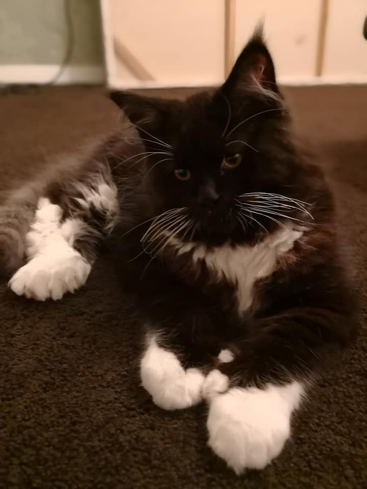

The Maine Coon is a native New Englander, hailing from Maine, where he was a popular mouser, farm cat and, most likely, ship’s cat, at least as far back as the early 19th century.
(Click pic to read more).

(Click pic to read more).
(Click pic to read more).


Maine Coon cats do not reach full physical maturation until they are about 4-5 years lid. The weight range will vary depending on gender and of course genetics. The accepted size standard for the breed ranges between 11-25lbs, with the males being larger than the females. This breed grows at double the rate of other domestic cats. They can easily gain 2 pounds per month during their growing cycle. It is important that their weight is monitored and they are not allowed to get too fat or the risk of health problems also doubles. The standards are 15-25lbs for males and 11-20 pounds for females.
email: amy_tako@hotmail.com | phone: 123456789 | address: Auckland New Zealand